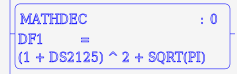
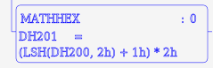
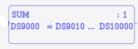
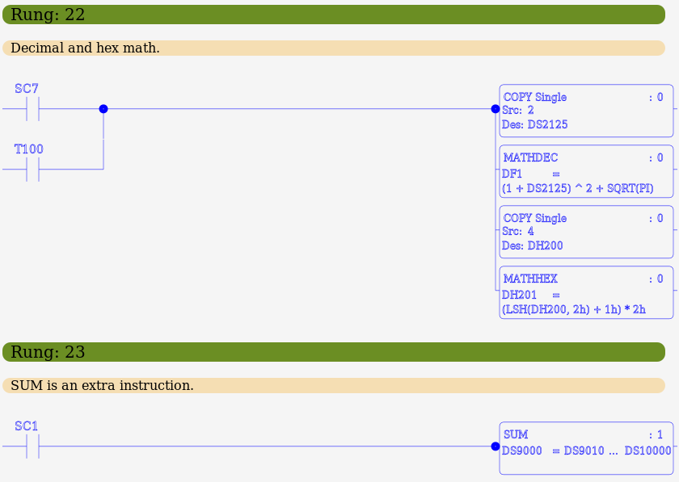

MBLogic
for an open world in automation
MBLogic
for an open world in automation
Math Instructions
Math instructions perform mathematical operations on registers and constants, and output the results to registers.
| Instr. | Desc. | # Param | One Shot | SC40 | SC43 | SC46 | Symbol |
|---|---|---|---|---|---|---|---|
| MATHDEC | Decimal math | 3 | X | X | X | X |  |
| MATHHEX | Hexa- decimal math | 3 | X | X | X | X |  |
| SUM | Sum a range of registers | 3 or 4 | X | X |  |
There are only three math instructions. However, they accept complete equations as input parameters allowing them to perform many different operations.
The decimal and hexadecimal math instructions are similar except for the functions and operators they offer, and for the type of registers they operate on. The general operation of both is desribed here with the details of the functions and operators listed separately below.
The MATHDEC and MATHHEX instruction expects the following parameters:
- Destination - The the destination register. Register types may be DS, DD, DF, DH. The destination register must be compatible with the source registers. DH registers may not be mixed with the other register types.
- A mandatory one shot parameter of 0 or 1. If the paramter is set to "1", the one-shot option is enabled and the instruction executes only when the logic stack transitions from false to true. If the paramter is set to "0", the one-shot option is disabled and the instruction executes whenever the logic stack is true. The one shot parameter must always be specified for these instructions as the variable number of equation elements would otherwise make it impossible to distinguish from from the equations.
- Math equation - All elements following are treated as part of the math equation and must form a legal mathematical equation.
MATHDEC destination one-shot equationparameters
MATHHEX destination one-shot equationparameters
The error flags are set under the following conditions:
- SC40 - A division by zero was attempted.
- SC43 - The data could not be converted to the correct type, or the data value is out of range for the destination register.
- SC46 - An unspecified math error has occurred. This includes all math errors not covered by the other math error flags.
Example:
// Decimal math. Will resolve to 10.77245 NETWORK 1 STR X1 COPY 2 DS1 MATHDEC DF1 0 (1 + DS1) ^ 2 + SQRT(PI) // Hexadecimal math. Will resolve to 22h (in hexadecimal) NETWORK 2 STR X2 COPY 4 DH2 MATHHEX DH1 0 (LSH(DH2, 2h) + 1h) * 2h
Decimal Math Operations
Decimal math operations are conducted by functions and operators. The input values may be DS, DD, or DF registers, or decimal constants. The destination may be a DS, DD, or DF register.
Angles for transcendental functions (SIN, COS, etc.) are in radians.
Using a function that operates in floating point (transcendental, logmarithic, square root), or using any floating point number (including the PI constant) will cause the entire equation to be conducted in floating point. The result will then be converted to a type that is compatible with the destination register. If a floating point number is copied to an integer register, the decimal part of the result is truncated, not rounded.
| Operation | Description | Example |
| SIN | Sine | SIN(DF1) |
| COS | Cosine | COS(DF2) |
| TAN | Tangent | TAN(DF3) |
| ASIN | Arcsine | ASIN(DF4) |
| ACOS | Arccosine | ACOS(DF5) |
| ATAN | Arctagent | ATAN(DF6) |
| LOG | Log (base 10) | LOG(DF7) |
| LN | Natural log | LN(DF8) |
| SQRT | Square root | SQRT(DD3) |
| RAD | Convert degrees to radians | RAD(DF21) |
| DEG | Convert radians to degrees | DEG(DF22) |
| + | Add | DS1 + 7 |
| - | Subtract | DS3 - DS4 |
| * | Multiply | DS5 * 10 |
| / | Divide | DF7 / DS1 |
| MOD | Modulus (remainder) | DS22 MOD DS21 |
| ^ | Exponentiate | DF52 ^ 3 |
| PI | The constant PI | PI * DF102 |
| () | Parentheses (group operations) | (DS2 + 71) * DF9 |
Hexadecimal Math Operations
Hexadecimal math operations are conducted by functions and operators. The input values may be DH registers, or hexadecimal constants. The destination must be a DH register.
Shifts and rotates take place within a 16 bit register size.
| Operation | Description | Example |
|---|---|---|
| LSH | Shift left a specified amount | LSH(DH1, 2h) |
| RSH | Shift right a specified amount | RSH(DH2, 2h) |
| LRO | Rotate left a specified amount | LRO(DH3, 10h) |
| RRO | Rotate right a specified amount | RRO(DH4, 10h) |
| AND | AND words | DH5 AND Fh |
| OR | OR words | DH6 OR 7Fh |
| XOR | XOR words | DH7 XOR 1Ah |
| + | Add | DH1 + 7h |
| - | Subtract | DH3 - DH4 |
| * | Multiply | DH5 * 1fh |
| / | Divide | DH7 / DH1 |
| MOD | Modulus (remainder) | DH22 MOD DH21 |
| () | Parentheses (group operations) | (DH2 + a1h) * DH9 |
Sum
The SUM function is provided as a separate instruction instead of being called from within the other math instructions.
The Sum instruction expects the following parameters:
- Source Start - The start of the register address range. Register types may be DS, DD, DF, DH.
- Source End - The end of the register address range. This must be a higher address of the same type as the source start.
- Destination - The the destination register. Register types may be DS, DD, DF, DH. The destination register must be compatible with the source registers.
- An optional one shot parameter of 0 or 1. If the paramter is set to "1", the one-shot option is enabled and the instruction executes only when the logic stack transitions from false to true. If the paramter is set to "0", the one-shot option is disabled and the instruction executes whenever the logic stack is true. If the parameter is missing, it has the same effect as setting it to "0".
SUM sourcestart sourceend destination (one-shot)
The error flags are set under the following conditions:
- SC43 - The data could not be converted to the correct type, or the data value is out of range for the destination register.
Example:
// Sum a series of registers. NETWORK 1 STR X1 SUM DS10 DS19 DF20 // Sum with a one shot. NETWORK 2 STR X2 SUM DH10 DH19 DH20 1
Ladder Examples
The following shows examples in ladder format.
